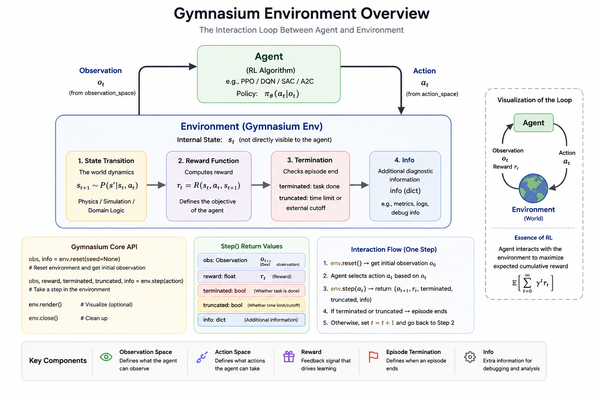
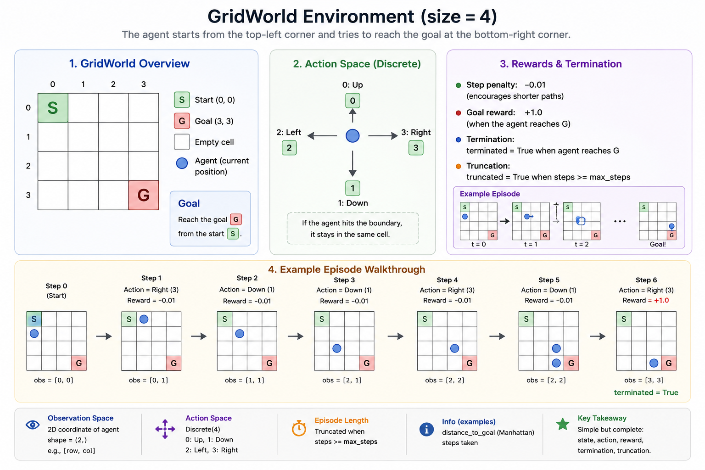

Introduction
Most reinforcement learning tutorials start with:
env = gym.make(...)
but very few explain:
- how RL environments are actually designed
- why reward engineering is difficult
- how observations affect training stability
- why agents exploit environment bugs
In practice, successful RL experiments depend not only on algorithms, but also on:
- environment engineering
- reward design
- debugging
- experimentation
This article focuses on the engineering side of reinforcement learning environments. We first discuss the core design decisions behind an environment, then build a minimal GridWorld environment with Gymnasium.
By the end, you should understand:
- what an RL environment is responsible for
- how observation spaces and action spaces affect learning
- why reward design is often the real bottleneck
- how to implement and debug a custom Gymnasium environment
The article is organized in two parts:
- Sections 1-5 explain the design principles behind RL environments.
- Section 6 turns those principles into a working
GridWorldimplementation.
1. What Is an RL Environment?
1.1 Agent and Environment
In reinforcement learning, the agent interacts with an environment through actions and observations.
At each timestep:
- the agent receives an observation
- the agent takes an action
- the environment transitions to a new state
- the environment returns a reward
The transition dynamics can be written as:
The environment defines:
- what the agent can observe
- what actions are allowed
- what rewards are given
- when episodes terminate
1.2 Why Environment Design Matters
A poorly designed environment can make even the best RL algorithm fail.
Environment design determines:
| Component | Effect |
|---|---|
| Observation Space | What information the agent has |
| Action Space | What behaviors are possible |
| Reward Function | What the agent optimizes |
| Dynamics | How difficult the task becomes |
In many practical systems:
environment engineering matters more than algorithm choice.
2. Anatomy of a Gymnasium Environment
A Gymnasium environment typically looks like:
class MyEnv(gym.Env):
Core components include:
observation_spaceaction_spacereset()step()render()
These pieces form the contract between the learning algorithm and the world it is trying to solve.
2.1 Observation Space
The observation space defines the format, shape, and valid range of observations returned by the environment.
Example:
self.observation_space = gym.spaces.Box(
low=-1.0,
high=1.0,
shape=(4,),
dtype=np.float32
)
The observation should:
- contain sufficient task information
- avoid future information leakage
- remain numerically stable
- have normalized scales when possible
2.2 Action Space
The action space defines what actions the agent can take.
Discrete actions:
gym.spaces.Discrete(4)
Continuous actions:
gym.spaces.Box(low=-1, high=1, shape=(2,))
Action design strongly affects:
- exploration difficulty
- training stability
- robotics controllability
2.3 reset()
reset() initializes a new episode and returns the first observation.
obs, info = env.reset()
Key considerations:
- initial state distribution
- randomness
- curriculum learning
- reproducibility
Poor reset logic often causes unstable training because the agent may experience inconsistent starting states.
2.4 step(action)
step(action) is the core environment transition function.
obs, reward, terminated, truncated, info = env.step(action)
Responsibilities include:
- state transition
- reward computation
- termination checking
- logging/debug information
This function effectively defines the task dynamics.
3. Designing Observation Spaces
3.1 What Should Be Observed?
The observation is the information available to the agent when it chooses an action.
A good observation should:
- contain enough information for decision making
- avoid unnecessary noise
- remain consistent across timesteps
- match what would be available in the real task
Examples:
- robot joint states
- velocities
- target positions
- sensor readings
3.2 Common Mistakes
Future Information Leakage
The observation accidentally contains information unavailable in reality.
Example: giving the agent the exact future target position when the real robot would only receive noisy sensor readings.
Inconsistent Scaling
Some values are extremely large while others are tiny.
Example: mixing joint angles in radians, pixel coordinates, and raw force values without normalization.
Missing Critical States
The agent cannot infer necessary task information.
Example: giving position but not velocity in a task where momentum matters.
Partial Observability
The environment hides important states.
Sometimes partial observability is intentional, but then the policy may need memory, frame stacking, or recurrent networks.
3.3 Observation Normalization
Normalization improves:
- gradient stability
- learning speed
- optimization consistency
Common approaches:
- mean/std normalization
- clipping
- running statistics
4. Designing Action Spaces
4.1 Discrete vs Continuous Actions
| Type | Example |
|---|---|
| Discrete | move left/right |
| Continuous | robot torque control |
Discrete action spaces are easier to debug because every action has a clear meaning. Continuous action spaces are more expressive, but they usually make exploration and stabilization harder.
4.2 Robotics Action Design
Common robotics action spaces include:
- torque control
- velocity control
- position control
Each introduces different stability and safety constraints.
As a rule of thumb:
- torque control gives more direct physical control but can be unstable
- velocity control is often easier to learn
- position control is safer and more structured but may limit behavior
4.3 Action Clipping
Example:
action = np.clip(action, -1.0, 1.0)
Important for:
- physical validity
- numerical stability
- avoiding simulator explosions
5. Reward Engineering
Reward engineering is one of the hardest parts of RL because the agent optimizes exactly what the reward says, not what the designer intended.
5.1 Sparse vs Dense Rewards
Sparse reward:
reward = 1 if success else 0
Dense reward:
reward = -distance_to_target
Trade-off:
| Sparse | Dense |
|---|---|
| hard exploration | easier learning |
| cleaner objective | risk of shortcuts |
Sparse rewards are closer to the real task objective, but they can make exploration extremely difficult. Dense rewards provide more learning signal, but they can accidentally teach the wrong behavior.
5.2 Reward Shaping
Potential-based shaping:
Reward shaping can accelerate learning, but it may introduce unintended behaviors if the shaped reward becomes easier to optimize than the actual task.
5.3 Reward Hacking
Agents often exploit loopholes in reward functions.
Examples:
- spinning in circles
- exploiting simulator bugs
- farming unintended rewards
A rising reward curve does not always mean meaningful behavior.
For this reason, always inspect behavior visually when possible.
5.4 Reward Scaling
Improper reward scales may cause:
- exploding Q-values
- unstable gradients
- learning collapse
Reward normalization is often necessary.
Good reward scales are usually boring: large enough to create a learning signal, but not so large that value estimates become unstable.
6. Building a Minimal Custom Environment: GridWorld
To make the environment design concrete, we will build a small GridWorld environment.
The task is simple:
The agent starts from the top-left corner and tries to reach the goal at the bottom-right corner.
This example is intentionally small. The goal is not to create a difficult benchmark, but to expose every important part of an RL environment in a form that is easy to inspect.

6.1 Task Definition
We define a small grid world:
S . . .
. . . .
. . . .
. . . G
Where:
Sis the start positionGis the goal position- the agent can move up, down, left, or right
- each step receives a small negative reward
- reaching the goal gives a positive reward
This environment contains all key components of an RL task:
| Component | Design |
|---|---|
| Observation | Agent position |
| Action | Move up/down/left/right |
| Reward | Step penalty + goal reward |
| Termination | Agent reaches goal |
| Truncation | Maximum episode length |
6.2 Environment Code
The full environment is shown below. Notice that most of the work happens inside reset() and step().
import gymnasium as gym
from gymnasium import spaces
import numpy as np
class GridWorldEnv(gym.Env):
"""
A simple GridWorld environment.
The agent starts at (0, 0) and needs to reach the goal at
(size - 1, size - 1).
"""
metadata = {"render_modes": ["human", "ansi"]}
def __init__(self, size=4, max_steps=50, render_mode=None):
super().__init__()
self.size = size
self.max_steps = max_steps
self.render_mode = render_mode
# Actions:
# 0 = up
# 1 = down
# 2 = left
# 3 = right
self.action_space = spaces.Discrete(4)
# Observation:
# agent position represented as [row, col]
self.observation_space = spaces.Box(
low=0,
high=size - 1,
shape=(2,),
dtype=np.int32,
)
self.agent_pos = None
self.goal_pos = np.array([size - 1, size - 1], dtype=np.int32)
self.steps = 0
def reset(self, seed=None, options=None):
super().reset(seed=seed)
self.agent_pos = np.array([0, 0], dtype=np.int32)
self.steps = 0
observation = self._get_obs()
info = self._get_info()
return observation, info
def step(self, action):
self.steps += 1
# Convert action into movement
if action == 0: # up
move = np.array([-1, 0])
elif action == 1: # down
move = np.array([1, 0])
elif action == 2: # left
move = np.array([0, -1])
elif action == 3: # right
move = np.array([0, 1])
else:
raise ValueError(f"Invalid action: {action}")
# Update position and keep it inside the grid
self.agent_pos = np.clip(
self.agent_pos + move,
0,
self.size - 1,
)
# Check termination
terminated = np.array_equal(self.agent_pos, self.goal_pos)
# Check truncation
truncated = self.steps >= self.max_steps
# Reward design
if terminated:
reward = 1.0
else:
reward = -0.01
observation = self._get_obs()
info = self._get_info()
return observation, reward, terminated, truncated, info
def render(self):
grid = np.full((self.size, self.size), ".", dtype=str)
grid[tuple(self.goal_pos)] = "G"
grid[tuple(self.agent_pos)] = "A"
output = "\n".join(" ".join(row) for row in grid)
if self.render_mode == "human":
print(output)
print()
elif self.render_mode == "ansi":
return output
else:
return output
def _get_obs(self):
return self.agent_pos.copy()
def _get_info(self):
return {
"distance_to_goal": np.linalg.norm(
self.agent_pos - self.goal_pos,
ord=1,
),
"steps": self.steps,
}
6.3 Running the Environment
Before connecting any learning algorithm, run the environment manually or with random actions.
env = GridWorldEnv(size=4, max_steps=20, render_mode="human")
obs, info = env.reset(seed=42)
print("Initial observation:", obs)
print("Initial info:", info)
terminated = False
truncated = False
while not terminated and not truncated:
action = env.action_space.sample()
obs, reward, terminated, truncated, info = env.step(action)
env.render()
print("Action:", action)
print("Observation:", obs)
print("Reward:", reward)
print("Terminated:", terminated)
print("Truncated:", truncated)
print("Info:", info)
print("-" * 30)
6.4 Understanding the Design
Observation
The observation is simply the agent position:
[row, col]
For example:
np.array([0, 0])
This is enough because the goal is fixed at the bottom-right corner. If the goal were randomized, the goal position should also be included in the observation.
In more complex environments, observations may include:
- robot joint positions
- velocities
- camera images
- lidar readings
- target positions
Action Space
The action space is discrete:
spaces.Discrete(4)
The four actions are:
| Action | Meaning |
|---|---|
0 |
Up |
1 |
Down |
2 |
Left |
3 |
Right |
This is simple and easy to debug.
For robotics tasks, the action space is often continuous:
spaces.Box(low=-1.0, high=1.0, shape=(n,))
where each dimension may represent torque, velocity, or position commands.
Reward Function
The reward is:
reward = 1.0 if goal_reached else -0.01
This means:
- the agent is encouraged to reach the goal
- the agent is slightly penalized for taking too many steps
This small step penalty encourages shorter paths.
However, reward design is a trade-off:
| Reward Choice | Effect |
|---|---|
+1 at goal only |
Sparse reward, harder exploration |
-distance_to_goal |
Dense reward, easier learning |
-0.01 per step |
Encourages efficiency |
| Large negative collision penalty | Encourages safety |
Terminated vs Truncated
Gymnasium separates episode ending into two concepts:
terminated
truncated
terminated=True means the task naturally ended.
Example:
agent reached the goal
truncated=True means the episode was externally cut off.
Example:
maximum step limit reached
This distinction is important for correct RL training.
If an episode ends because the task is solved, use terminated=True. If it ends because a time limit is reached, use truncated=True.
6.5 Debugging the Environment
Before training any RL algorithm, test the environment with a random policy.
env = GridWorldEnv(size=4, max_steps=20)
obs, info = env.reset()
for _ in range(10):
action = env.action_space.sample()
obs, reward, terminated, truncated, info = env.step(action)
print({
"obs": obs,
"reward": reward,
"terminated": terminated,
"truncated": truncated,
"info": info,
})
if terminated or truncated:
obs, info = env.reset()
Check:
- Does the agent stay inside the grid?
- Does the reward look reasonable?
- Does the episode terminate at the goal?
- Does truncation happen after
max_steps? - Does
infocontain useful debugging information?
This step is small but important. If the random policy exposes bugs, a trained policy will usually exploit them even faster.
6.6 Environment Design Lessons
This GridWorld example demonstrates the core idea of RL environment engineering:
An environment is not just a Python class. It defines the world, the task, the feedback signal, and the failure modes.
Even in this simple example, design decisions matter:
- Should the observation include only agent position?
- Should the goal position be included?
- Should the reward be sparse or dense?
- Should invalid moves be penalized?
- Should the initial position be fixed or randomized?
These choices directly affect learning difficulty.
A good environment should make these choices explicit instead of hiding them inside implementation details.
6.7 Possible Extensions
This environment can be extended in many ways:
Random Start and Goal
self.agent_pos = self.np_random.integers(
low=0,
high=self.size,
size=(2,),
dtype=np.int32,
)
Obstacles
Add blocked cells that the agent cannot enter.
S . X .
. . X .
. . . .
X . . G
Dense Reward
Use distance-based reward:
reward = -np.linalg.norm(self.agent_pos - self.goal_pos, ord=1)
Partial Observability
Only show the local neighborhood around the agent.
Stochastic Dynamics
Make actions sometimes fail:
if self.np_random.random() < 0.1:
action = self.action_space.sample()
These extensions make the environment closer to real-world RL problems.
When extending an environment, add one source of complexity at a time. This makes it much easier to identify which design change caused a training problem.
6.8 Environment Registration
For larger projects, it is useful to register the custom environment so it can be created with gym.make().
Example:
gym.register(
id="CustomGridWorld-v0",
entry_point="envs.gridworld:GridWorldEnv",
)
Then the environment can be created like this:
env = gym.make("CustomGridWorld-v0")
Registration is helpful when:
- environments are reused across experiments
- training scripts should not import environment classes directly
- multiple environment variants need consistent names
- benchmark results should be easier to reproduce
6.9 A Practical Project Layout
As the environment grows, avoid keeping everything in one script. A cleaner structure is:
rl_project/
|-- envs/
| |-- __init__.py
| `-- gridworld.py
|-- train.py
|-- evaluate.py
`-- configs/
`-- gridworld.yaml
This separation makes it easier to:
- test the environment independently
- reuse the same environment across algorithms
- keep training code separate from environment logic
- add configuration files for different experiments
Conclusion
Reinforcement learning engineering is not only about algorithms. A well-designed environment is part of the learning system.
The main lessons from this article are:
- observations define what the agent can know
- actions define what the agent can do
- rewards define what the agent will optimize
- termination and truncation define how episodes end
- debugging should happen before training begins
In practice, a strong RL algorithm cannot compensate for a broken task definition, misleading reward, unstable observation, or invalid action interface.
The best way to build environments is to treat them as experimental systems:
- define the task clearly
- make the state and action spaces explicit
- test the environment before training
- inspect behavior, not only reward
- add complexity gradually
Appendix A: Gymnasium API Cheatsheet
| API | Purpose |
|---|---|
reset() |
initialize episode |
step() |
environment transition |
render() |
visualization |
observation_space |
observation definition |
action_space |
action definition |
terminated |
natural task ending |
truncated |
external time cutoff |
Appendix B: Further Reading
- Gymnasium documentation: https://gymnasium.farama.org/
- Stable-Baselines3 documentation: https://stable-baselines3.readthedocs.io/
- MuJoCo documentation: https://mujoco.readthedocs.io/
- Isaac Lab documentation: https://isaac-sim.github.io/IsaacLab/